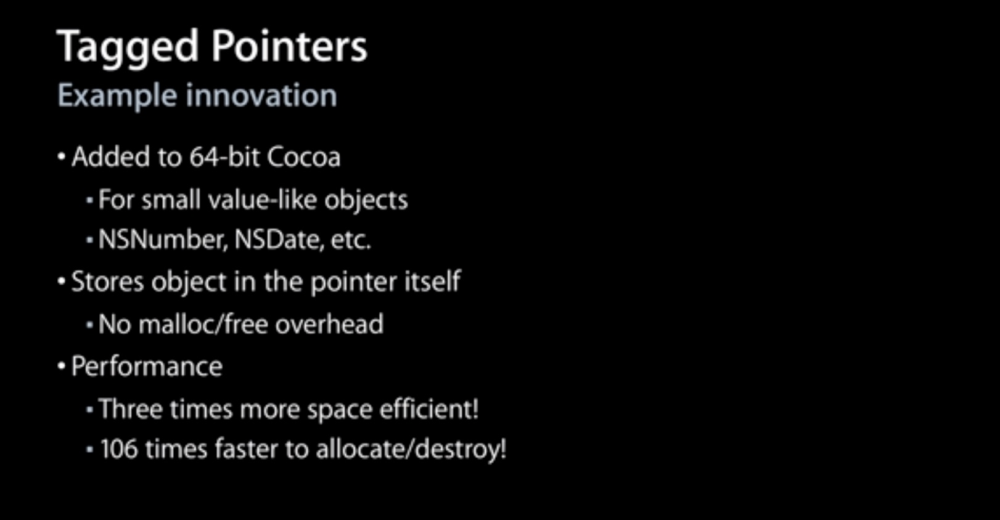
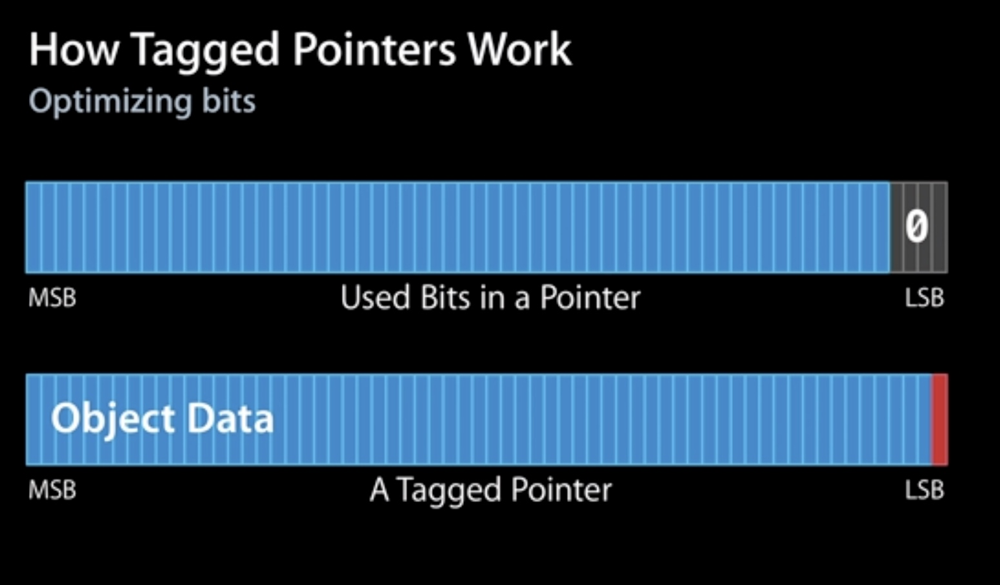

Tagged Pointer
说明
对象存储在内存中的时候总是内存对齐的，所以它们的地址会是单个指针大小的倍数，通常来说会是 16 的倍数。在 64 位系统中，对象的指针为 64 位整形。后面几位为 0 。由于后面几位一直为 0 。所以我们可以使用后面几位来记录一些事情。
Advances in Objective-C - WWDC 2013 - Videos - Apple Developer
WWDC 2013 上相关介绍，从 36:49 开始。

- 苹果使用 Tagged Pointer 来存储一些比较小的数据，如：
NSNumber，NSDate和NSString等； - 由于直接使用指针本身来存储数据，不再需要额外生命周期管理，没有
malloc/free； - 3 倍的空间优化， 106 倍的创建或者销毁速度。

使用低位的 bit 来作为标识位。
Tagged Pointer 解析
iOS - 老生常谈内存管理（五）：Tagged Pointer
由于内存对齐的关系，指针的值最后四位都是 0 ，所以可以使用这四位来做一些记录。如果最后一位是 1 ，则这个指针是 Tagged Pointer 。
static inline bool
_objc_isTaggedPointer(const void *ptr)
{
return ((intptr_t)ptr & _OBJC_TAG_MASK) == _OBJC_TAG_MASK;
}
#if OBJC_MSB_TAGGED_POINTERS
# define _OBJC_TAG_MASK (1ULL<<63)
#else
# define _OBJC_TAG_MASK 1
#endif
#if TARGET_OS_OSX && __x86_64__
// 64-bit Mac - tag bit is LSB
# define OBJC_MSB_TAGGED_POINTERS 0
#else
// Everything else - tag bit is MSB
# define OBJC_MSB_TAGGED_POINTERS 1
#endif
在 iOS 平台上使用的是最高位进行判断，在 macOS 上 使用的是最低位。 Tagged Pointer 支持的类型：
enum
{
OBJC_TAG_NSAtom = 0,
OBJC_TAG_1 = 1,
OBJC_TAG_NSString = 2,
OBJC_TAG_NSNumber = 3,
OBJC_TAG_NSIndexPath = 4,
OBJC_TAG_NSManagedObjectID = 5,
OBJC_TAG_NSDate = 6,
OBJC_TAG_RESERVED_7 = 7,
OBJC_TAG_First60BitPayload = 0,
OBJC_TAG_Last60BitPayload = 6,
OBJC_TAG_First52BitPayload = 8,
OBJC_TAG_Last52BitPayload = 263,
OBJC_TAG_RESERVED_264 = 264
};
Tagged Pointer 不是真的对象，没有 isa 指针，不存在 retain ， release ， autorelease 等对象生命周期管理的流程，其引用计数为 NSUInteger 的最大值。
dispatch_queue_t queue = dispatch_queue_create("parallel", DISPATCH_QUEUE_CONCURRENT);
for (int i = 0; i < 1000; i ++) {
dispatch_async(queue, ^{
self.name = [NSString stringWithFormat:@"abcdefghijk"];
})
}
dispatch_queue_t queue = dispatch_queue_create("parallel", DISPATCH_QUEUE_CONCURRENT);
for (int i = 0; i < 1000; i ++) {
dispatch_async(queue, ^{
self.name = [NSString stringWithFormat:@"abc"];
})
}
上面的代码中，第一个 for 循环会崩溃，因为在多线程中可能会重复 release ，而第二个不会，因为 Tagged Pointer 其实是值类型，不涉及到 retain 和 release 操作，其赋值操作是原子性的。
Let's Build Tagged Pointers
mikeash.com: Friday Q&A 2012-07-27: Let's Build Tagged Pointers
Mike Ash 尝试自己实现了一个 Tagged Pointer 。
Tagged Pointer Strings
mikeash.com: Friday Q&A 2015-07-31: Tagged Pointer Strings
如果某些字符串可以保存为 60 位以内的二进制数据，那么对应的 NSString 就会被创建为 Tagged Pointer 。
由于 NSString 字符串编码的特殊性，苹果针对 NSString 的 Tagged Pointer 进行优化。
实现
NSString *a = @"a";
NSString *b = [[a mutableCopy] copy];
NSLog(@"%p %p %@", a, b, object_getClass(b));
- 常量字符串不会被存储为 Tagged Pointer ，因为常量字符串必须保证可以兼容不同的系统，但是 Tagged Pointer 的内部实现细节却不能保证兼容不同的系统，常量字符串嵌入到二进制字符串时有可能会崩溃；
- 先执行
[a mutableCopy]，因copy返回的是不可变的字符串，所以常量字符串的copy得到的还是原来的常量字符串，所以先通过mutableCopy生成一个新的可变字符串，然后再通过copy得到一个不可变的 Tagged Pointer ， Tagged Pointer 只会在运行时创建。
输出结果如下：
0x10ba41038 0x6115 NSTaggedPointerString
首先第一个 a 不是 Tagged Pointer ，是一个对象的指针，第二个是 Tagged Pointer。
然后 NSString 对应的 Tagged Pointer 使用的是 ASCII 编码，占用的长度较少。
伪代码：
unsigned short -[NSTaggedPointerString characterAtIndex:](void * self, void * _cmd, unsigned long long index) {
int8_t buffer[11];
length = self >> 0x4 & 0xf;
if (length >= 0x8) {
stringData = self >> 0x8;
table = "eilotrm.apdnsIc ufkMShjTRxgC4013bDNvwyUL2O856P-B79AFKEWV_zGJ/HYX";
cursor = length;
if (length < 0xa) {
do {
buffer[cursor - 1] = table[stringData & 0x3f];
cursor = cursor - 0x1;
stringData = stringData >> 0x6;
} while (cursor != 0x0);
}
else {
do {
buffer[cursor - 1] = table[stringData & 0x1f];
cursor = cursor - 0x1;
stringData = stringData >> 0x5;
} while (cursor != 0x0);
}
} else {
*(uint64_t *)buffer = self >> 8;
}
if (length <= index) {
rbx = r8;
___CFExceptionProem(self, _cmd);
[NSException raise:@"NSRangeException" format:@"%@: Index %lu out of bounds; string length %lu"];
r8 = rbx;
}
rax = buffer[index];
return rax;
}
- 长度小于 8 的情况下，直接使用 ASCII 编码，所以
self按位编译后直接赋值给buff即可； - 长度大于等于8小于10，就会取出
stringData的最低 6 位，作为table的索引取出相应的值拷贝到buffer中，然后将stringData右移 6 位，重复操作； - 如果大于等于 10 ，那么就会使用 5 位编码，而
table只使用前半部分。
构造 NSString Tagged Pointer 的原理大致上也和上面的一致。
6 位编码表：
eilotrm.apdnsIc ufkMShjTRxgC4013bDNvwyUL2O856P-B79AFKEWV_zGJ/HYX
猜测是按照在英语中出现的频率进行排序，使得尽量多的字符串可以使用 Tagged Pointer 。通过一个简单又巧妙的查找表方式在有限的空间内存储尽量的数据。